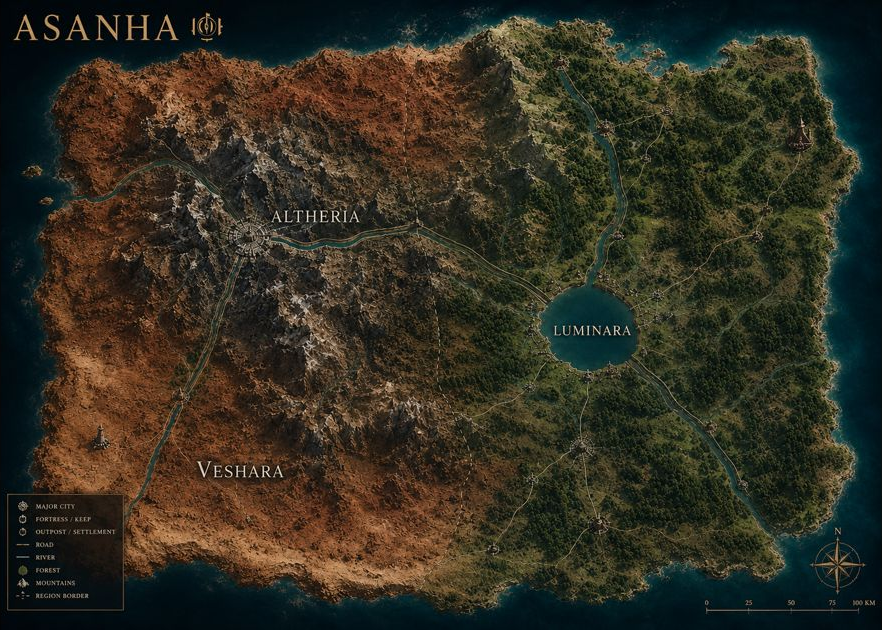

The World of COA
Asanha
Asanha is the world the Valkory call home — one world, one capital, and two regions divided.
A desert realm cut through by rivers of emerald, where medieval mortal kingdoms and vampire society hold an uneasy, watchful coexistence. The Church's influence runs deep in the mortal lands, making discretion a matter of survival for the undead — but Asanha's near-eternal twilight gives the Valkory's shadow-bound powers room to breathe.
Two Regions, One World
Asanha splits into two named halves around Altheria — one bound to endless twilight, the other losing ground to it.
The Desert Side
Veshara
Red sand, dark, and locked in perpetual twilight — fully vampire-safe. This is home ground for Clan Valkory, and where Altheria itself sits, built atop the prison of the bound demon Vesh'kal. Veshara takes his name.
The Green Side
Luminara
Lush, sun-filled, and life-sustaining — home to other vampire clans and to mortal populations. It's also the land that's dying: Veshara's red sands have been creeping into it ever since an event known as the Sundering.
The Zone Map
Veshara's red sand to the west, Luminara's green to the east, split by a political border that doesn't line up with where the sand's actually winning — Altheria off in the west, three rivers feeding a lake in Luminara before it reaches the coast.
